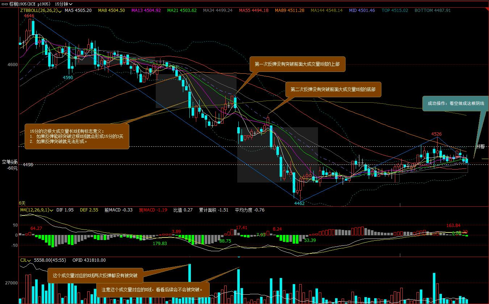
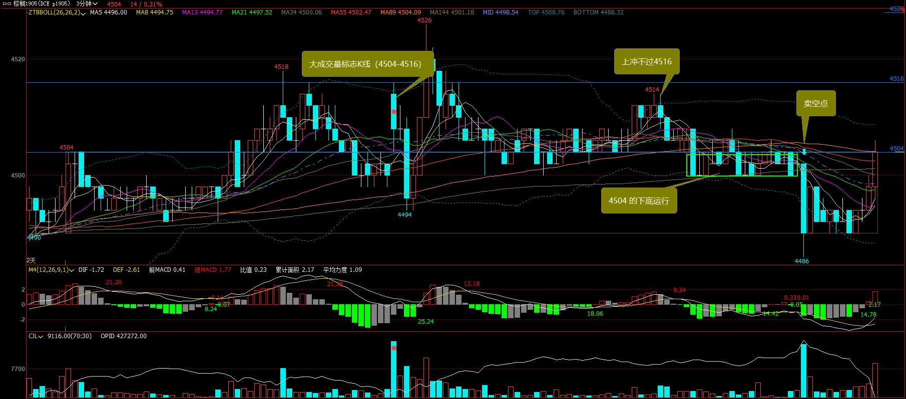
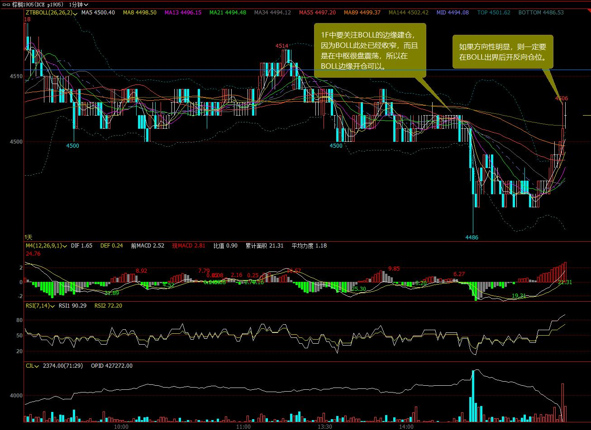

<!DOCTYPE html>
<html lang="en-US">
    <head>
        <meta charset="utf-8"> 
        <meta http-equiv="X-UA-Compatible" content="IE=edge">
        <meta name="viewport" content="width=device-width, initial-scale=1.0">
        <meta name="author" content="Walter" />
        <meta name="copyright" content="Walter" />

        <meta property="og:type" content="article" />
        <meta name="twitter:card" content="summary">

<meta name="keywords" content="futures, Fut&Stock, " />

<meta property="og:title" content="日内交易成功经验 "/>
<meta property="og:url" content="./ri-nei-jiao-yi-cheng-gong-jing-yan.html" />
<meta property="og:description" content="1.0 大成交量标志K线 说明： 根据缠论认为这是第一个15分钟反弹，而且横盘的位置还在15F的顶分型中，有空的可能； 根据15F, 5F成交量4504-4516之间为大成交量标志K线； 开仓位置应该在BOLL包络线附近，如果窄幅横盘，则在边缘，如果趋势明显却要开反向仓位，则要在BOLL包络线之外。 15F 3F 1F" />
<meta property="og:site_name" content="Just MEMO" />
<meta property="og:article:author" content="Walter" />
<meta property="og:article:published_time" content="2018-12-05T10:37:33+08:00" />
<meta property="og:article:modified_time" content="2018-12-05T10:37:33+08:00" />
<meta name="twitter:title" content="日内交易成功经验 ">
<meta name="twitter:description" content="1.0 大成交量标志K线 说明： 根据缠论认为这是第一个15分钟反弹，而且横盘的位置还在15F的顶分型中，有空的可能； 根据15F, 5F成交量4504-4516之间为大成交量标志K线； 开仓位置应该在BOLL包络线附近，如果窄幅横盘，则在边缘，如果趋势明显却要开反向仓位，则要在BOLL包络线之外。 15F 3F 1F">

        <title>日内交易成功经验  · Just MEMO
</title>
        <link href="//netdna.bootstrapcdn.com/twitter-bootstrap/2.3.2/css/bootstrap-combined.min.css" rel="stylesheet">
        <link href="//netdna.bootstrapcdn.com/font-awesome/4.0.1/css/font-awesome.css" rel="stylesheet">
        <link rel="stylesheet" type="text/css" href="./theme/css/pygments.css" media="screen">
        <link rel="stylesheet" type="text/css" href="./theme/tipuesearch/tipuesearch.css" media="screen">
        <link rel="stylesheet" type="text/css" href="./theme/css/elegant.css" media="screen">
        <link rel="stylesheet" type="text/css" href="./theme/css/custom.css" media="screen">


    </head>
    <body>
        <div id="content-sans-footer">
        <div class="navbar navbar-static-top">
            <div class="navbar-inner">
                <div class="container-fluid">
                    <a class="btn btn-navbar" data-toggle="collapse" data-target=".nav-collapse">
                        <span class="icon-bar"></span>
                        <span class="icon-bar"></span>
                        <span class="icon-bar"></span>
                    </a>
                    <a class="brand" href="./"><span class=site-name>Just MEMO</span></a>
                    <div class="nav-collapse collapse">
                        <ul class="nav pull-right top-menu">
                            <li ><a href=".">Home</a></li>
                            <li ><a href="./categories.html">Categories</a></li>
                            <li ><a href="./tags.html">Tags</a></li>
                            <li ><a href="./archives.html">Archives</a></li>
                            <li><form class="navbar-search" action="./search.html" onsubmit="return validateForm(this.elements['q'].value);"> <input type="text" class="search-query" placeholder="Search" name="q" id="tipue_search_input"></form></li>
                        </ul>
                    </div>
                </div>
            </div>
        </div>
        <div class="container-fluid">
            <div class="row-fluid">
                <div class="span1"></div>
                <div class="span10">
<article>
<div class="row-fluid">
    <header class="page-header span10 offset2">
    <h1><a href="./ri-nei-jiao-yi-cheng-gong-jing-yan.html"> 日内交易成功经验  </a></h1>
    </header>
</div>

<div class="row-fluid">
    <div class="span2 table-of-content">
        <nav>
        <h4>Contents</h4>
        <div id="toc"><ul><li><a class="toc-href" href="#1.0 da cheng jiao liang biao zhi kxian" title="1.0 大成交量标志K线">1.0 大成交量标志K线</a></li></ul></div>
        </nav>
    </div>
    <div class="span8 article-content">

            
            <h3 id="1.0 da cheng jiao liang biao zhi kxian">1.0 大成交量标志K线</h3>
<p><code>说明</code>：</p>
<ol>
<li>根据缠论认为这是第一个15分钟反弹，而且横盘的位置还在15F的顶分型中，有空的可能；</li>
<li>根据15F, 5F成交量4504-4516之间为大成交量标志K线；</li>
<li>开仓位置应该在BOLL包络线附近，如果窄幅横盘，则在边缘，如果趋势明显却要开反向仓位，则要在BOLL包络线之外。</li>
</ol>
<p>
<figure><a href="./images/stock/chenggong-1-1.jpg"></a><figcaption>15F</figcaption></figure></p>
<p>
<figure><a href="./images/stock/chenggong-1-2.jpg"></a><figcaption>3F</figcaption></figure></p>
<p>
<figure><a href="./images/stock/chenggong-1-3.jpg"></a><figcaption>1F</figcaption></figure></p>
            
            
            <hr/>
<section>
    <h2>Related Posts</h2>
<ul class="related-posts-list">
<li><a href="./qi-huo-wen-zhai.html" title="期货文摘">期货文摘</a></li>
<li><a href="./qi-huo-jiao-yi-ji-ben-xin-xi.html" title="期货交易基本信息">期货交易基本信息</a></li>
<li><a href="./qi-huo-ri-nei-jiao-yi.html" title="期货日内交易">期货日内交易</a></li>
<li><a href="./qi-huo-jin-ri-fu-pan.html" title="期货今日复盘">期货今日复盘</a></li>
<li><a href="./wen-hua-gong-shi.html" title="文华公式">文华公式</a></li>
</ul>
<hr />
</section>
        </div>
        <section>
        <div class="span2" style="float:right;font-size:0.9em;">
            <h4>Published</h4>
            <time pubdate="pubdate" datetime="2018-12-05T10:37:33+08:00">Dec 5, 2018</time>

<h4>Last Updated</h4>
<time datetime="2018-12-05T10:37:33+08:00">Dec 5, 2018</time>

            <h4>Category</h4>
            <a class="category-link" href="./categories.html#futstock-ref">Fut&Stock</a>
            <h4>Tags</h4>
            <ul class="list-of-tags tags-in-article">
                <li><a href="./tags.html#futures-ref">futures
                    <span>13</span>
</a></li>
            </ul>
<h4>Contact</h4>
    <a href="https://slashdot.org/" title="My IT新闻Slashdot Profile" class="sidebar-social-links" target="_blank">
    <i class="fa fa-it新闻slashdot sidebar-social-links"></i></a>
        </div>
        </section>
</div>
</article>
                </div>
                <div class="span1"></div>
            </div>
        </div>
        <div id="push"></div>
    </div>
<footer>
<div id="footer">
    <ul class="footer-content">
        <li class="elegant-power">Powered by <a href="http://getpelican.com/" title="Pelican Home Page">Pelican</a>. Theme: <a href="https://github.com/Pelican-Elegant/elegant/" title="Theme Elegant Home Page">Elegant</a></li>
    </ul>
</div>
</footer>            <script src="http://code.jquery.com/jquery.min.js"></script>
        <script src="//netdna.bootstrapcdn.com/twitter-bootstrap/2.3.2/js/bootstrap.min.js"></script>
        <script>
            function validateForm(query)
            {
                return (query.length > 0);
            }
        </script>

    
    </body>
    <!-- Theme: Elegant built for Pelican
    License : MIT -->
</html>